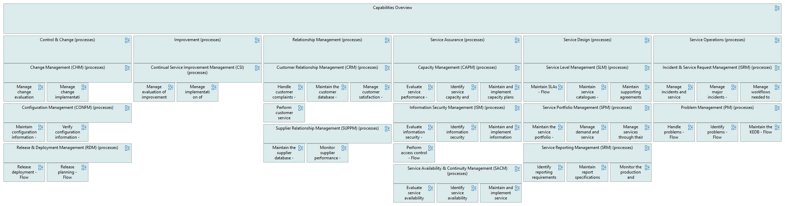

Process Grid - Flow
(
)

generated_by
hierarchical_grid.py::build_grid_view[Process hGrid - Flow]
generator_path
pedro/capabilities/hierarchical_grid/hierarchical_grid.py
run_at
2026-06-26T09:54:29
model_code
ITSMB full v2
announcement
no
Capabilities Overview
Control & Change (processes)
Change Management (CHM) (processes)
Manage change evaluation and approval - Flow
Manage change implementation and review
Configuration Management (CONFM) (processes)
Maintain configuration information - Flow
Verify configuration information - Flow
Release & Deployment Management (RDM) (processes)
Release deployment - Flow
Release planning - Flow
Improvement (processes)
Continual Service Improvement Management (CSI) (processes)
Manage evaluation of improvements - Flow
Manage implementation of improvements - Flow
Relationship Management (processes)
Customer Relationship Management (CRM) (processes)
Handle customer complaints - Flow
Maintain the customer database - Flow
Manage customer satisfaction - Flow
Perform customer service reviews - Flow
Supplier Relationship Management (SUPPM) (processes)
Maintain the supplier database - Flow
Monitor supplier performance - Flow
Service Assurance (processes)
Capacity Management (CAPM) (processes)
Evaluate service performance - Flow
Identify service capacity and performance requirements - Flow
Maintain and implement capacity plans - Flow
Information Security Management (ISM) (processes)
Evaluate information security - Flow
Identify information security requirements - Flow
Maintain and implement information security controls and policies - Flow
Perform access control - Flow
Service Availability & Continuity Management (SACM) (processes)
Evaluate service availability and continuity - Flow
Identify service availability and continuity requirements - Flow
Maintain and implement service availability and continuity plans - Flow
Service Design (processes)
Service Level Management (SLM) (processes)
Maintain SLAs - Flow
Maintain service catalogues - Flow
Maintain supporting agreements (OLAs and UAs) - Flow
Service Portfolio Management (SPM) (processes)
Maintain the service portfolio - Flow
Manage demand and service proposals - Flow
Manage services through their lifecycle - Flow
Service Reporting Management (SRM) (processes)
Identify reporting requirements - Flow
Maintain report specifications - Flow
Monitor the production and distribution of reports - Flow
Service Operations (processes)
Incident & Service Request Management (ISRM) (processes)
Manage incidents and service requests - Flow
Manage major incidents - Flow
Manage workflows needed to resolve incidents and fulfil service requests - Flow
Problem Management (PM) (processes)
Handle problems - Flow
Identify problems - Flow
Maintain the KEDB - Flow